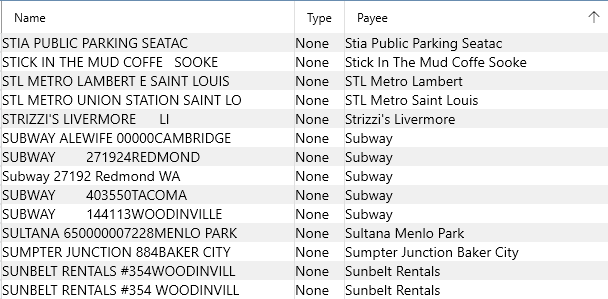
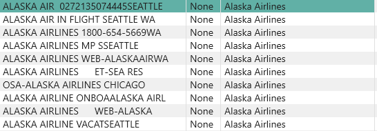
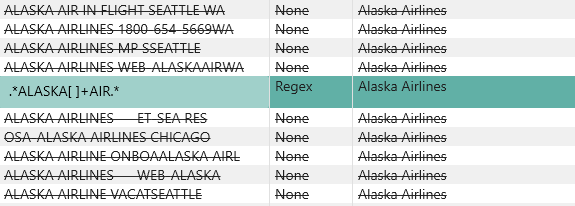

Aliases#
When you rename a payee and select the "Auto-Rename " checkbox in the Payee Rename dialog, then you are creating an "Alias " for that Payee. Aliases are important for Auto-Categorization to work nicely. Aliases make it possible for newly downloaded transactions to automatically pick up the nice name you prefer for a given Payee.
You can manage all your Aliases using the View/Aliases menu item:

If you delete a row from this list, it will not "undo" the rename, it will simply remove the alias so that future auto-renames no longer take place.
When you accumulate a lot of renames for a given Payee you might want to use the Regular Expression feature to consolidate them. For example, these are all the variations of Alaska Airlines one could accumulate over the years:

You can change the Name of the first one here to the following pattern:
.*ALASKA[ ]+AIR.*
And change the Type column to Regex, then you will see the following consolidation take place:

The pattern means:
- .* any initial sequence of chars
- ALASKA the literal string must match
- [ ]+ one or more space chars
- AIR the literal string
- .* any trailing sequence of chars
So this pattern matches all the other aliases we had created and therefore it will subsume then when
you Save the updated database, and it will match any future name you receive that matches this
pattern, making the Auto-Categorization feature work even better.
See also Payees.